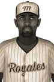

|
|
|  | National League Names Gibbs Best Batter Monday, July 28th, 1930 Clarence Gibbs has the tools to stick in this league for many years. The 24-year-old second baseman of the Montreal Royales had a hot bat in the National League over the past seven days and won the Player of the Week honors. Gibbs batted .458 with 11 hits in 24 at-bats, 2 home runs and 8 RBIs. A look at his season totals shows Gibbs with 8 home runs, .312 BA, .410 OBP, 57 RBIs and 55 runs scored. |   |